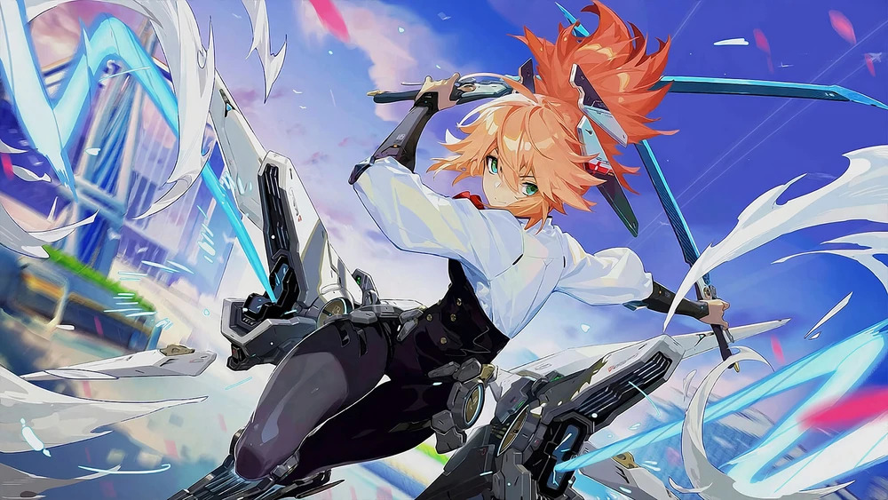

Fanny is a hero in the popular mobile game Mobile Legends: Bang Bang. Known as the Blade Dancer, she is the younger sister of another hero in the game, Tigreal. Fanny grew up under the protection of her family and her elder brother. However, after Tigreal took the blame for a mistake in battle and left home, Fanny disregarded obstructions from her family and joined the army. Through her own designed weapons, she successfully completed one task after another, becoming an outstanding fighter who can take care of herself.
Fanny is an assassin hero who specializes in chase and reap. She is known for her agility and near ability of flight. Players who have seen her flying through the air refer to her as the Blade of Freedom. Fanny is considered a difficult hero to master, but those who do can achieve great results with her.
Fanny has several abilities that allow her to quickly move around the battlefield and deal damage to her enemies. Her passive ability, Air Superiority, increases her damage while flying based on her flying speed and leaves a Prey Mark on her target. Each stack of Prey Mark on a target allows Fanny to regen energy when she deals damage to it.
Fanny's first skill, Tornado Strike, allows her to whirl her blade and deal physical damage to nearby enemies. Her second skill, Steel Cable, allows her to throw out a cable that draws her to the first obstacle it touches. Each successive use of this skill within 2 seconds decreases its energy cost and changes her flying direction. If she has enough energy and hits an enemy while flying, Tornado Strike will be triggered.
Fanny's ultimate skill, Cut Throat, allows her to initiate a quick attack on an enemy, dealing physical damage. Each stack of Prey Mark on an enemy will increase her damage by 20%.
In conclusion, Fanny is a powerful hero in Mobile Legends with unique abilities that allow her to quickly move around the battlefield and deal damage to her enemies. While she may be difficult to master, those who do can achieve great results with her.